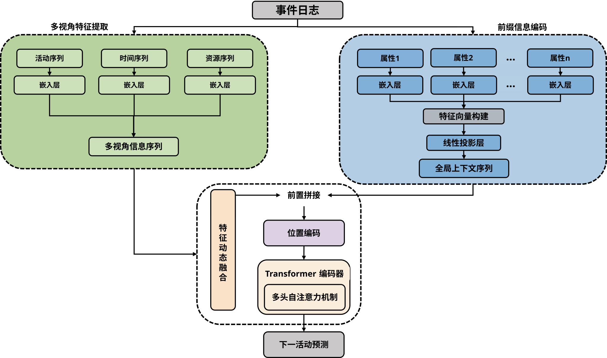
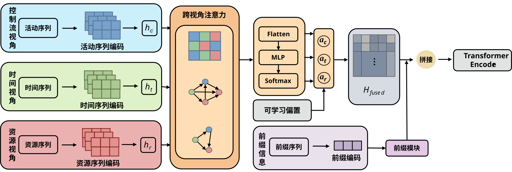
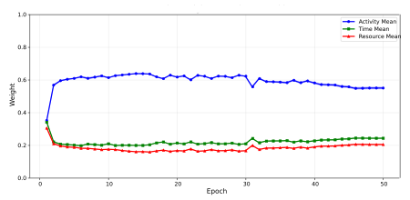
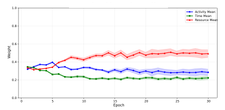
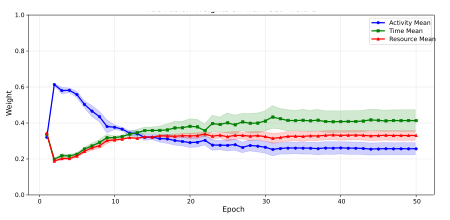
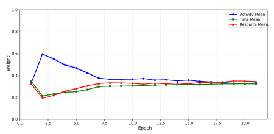

To address issues in the next activity prediction task of predictive business process monitoring—namely the over-reliance on a single control-flow perspective, the underutilization of extended attributes, and the inability of static feature fusion strategies to adapt to diverse process scenarios—this paper proposes a Multi-View Dynamic Fusion method for Next Activity Prediction in Business Processes (MVDF-NAP).
This method constructs event representations from three core perspectives: control-flow, time, and resource. Extended attributes beyond these core perspectives are encoded into a global context vector and injected as prefixes into the sequence modeling process. Building upon this, a dynamic fusion module based on cross-view attention is designed, enabling the model to adaptively learn and allocate fusion weights for each perspective. By combining this with a Transformer architecture to capture long-range dependencies, the method ultimately realizes next activity prediction.
Experiments were conducted on 8 publicly available real-world event log datasets. The results demonstrate that MVDF-NAP achieves the highest prediction accuracy on 6 of the datasets, reaching 96.76% and 88.50% on the Helpdesk and RTFM datasets, respectively. Furthermore, the proposed method can adaptively adjust the importance of the control-flow, time, and resource perspectives according to different business process scenarios, thereby achieving a balance between predictive performance and model interpretability.
我们的框架（MVDF-NAP）主要由四个阶段组成：多视角特征提取、前缀信息编码、特征动态融合和下一活动预测。

我们设计了三种核心视角和一种前缀编码机制，以全面捕捉真实业务流程的多维语义特征。

我们在涵盖IT服务、金融等领域的8个公开事件日志数据集上进行了实验，并与包含传统序列模型和图神经网络在内的5种代表性基线模型进行了对比。
| Model | BPIC2012_A | BPIC2012_O | BPIC2013_I | BPIC2013_P | BPIC2017_O | BPIC2020 | Helpdesk | RTFM |
|---|---|---|---|---|---|---|---|---|
| LSTM | 72.07% | 75.98% | 66.5% | 52.9% | 80.4% | 85.6% | 74.33% | 75.25% |
| PTM | 76.7% | 78.6% | 65% | 51.8% | 81.8% | 85.5% | 78.6% | 81.73% |
| MiDA | 79.5% | 84.2% | 72.4% | 62.1% | 89.4% | 88.2% | 80.1% | 84.64% |
| MiTFM | 80% | 84.3% | 72.4% | 63.5% | 90.3% | 88.7% | 82% | 81.24% |
| MHG | 74.25% | 83.3% | 72.85% | 64.9% | 92.3% | 85% | 83.5% | 81.89% |
| MVDF-NAP | 80.41% | 84.62% | 74.59% | 64.89% | 90.51% | 89.05% | 96.76% | 88.5% |
为了揭示动态融合机制的工作原理，我们提取了模型在训练过程中控制流 (Activity)、时间 (Time) 和 资源 (Resource) 三个视角融合权重的演化轨迹。所有模型均从 1:1:1 的权重初始化开始。 通过对 8 个数据集的对比分析，我们发现不同业务流程对多视角信息的依赖程度存在显著差异，并成功将其划分为以下四种典型模式：
代表数据集：BPIC2020, Helpdesk
控制流视角在训练初期迅速上升并保持高位。以 Helpdesk 为例，主流程路径占比较高，模型仅通过活动序列便能捕捉大部分转移规律，无需过度依赖其他视角。

代表数据集：BPIC2012, BPIC2013_I, BPIC2013_P
资源视角权重在训练后期反超并成为主要驱动力。在信息技术事件处理等流程中，控制流循环较多，下一步操作高度依赖于当前工程师（资源）的专业领域和权限。

代表数据集：BPIC2012_A
训练深入后，时间视角（绿线）逐渐超越控制流。在这类具有复杂分支和循环的流程中，相同活动前缀的不同处理阶段往往需要依赖全局/局部时间间隔来进行区分。

代表数据集：BPIC2017_O, RTFM
三类视角的权重在后期逐渐趋于平衡（~0.33）。这类流程高度复杂且标准化，单一视角难以完全主导预测，控制流、时间和资源之间展现出极强的互补关系。
